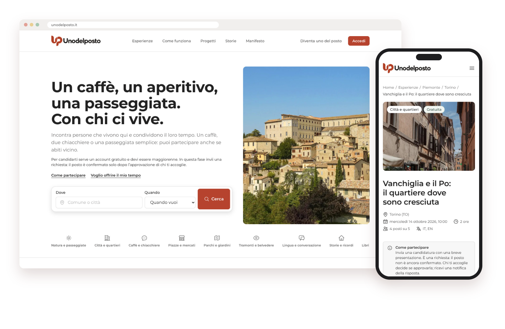
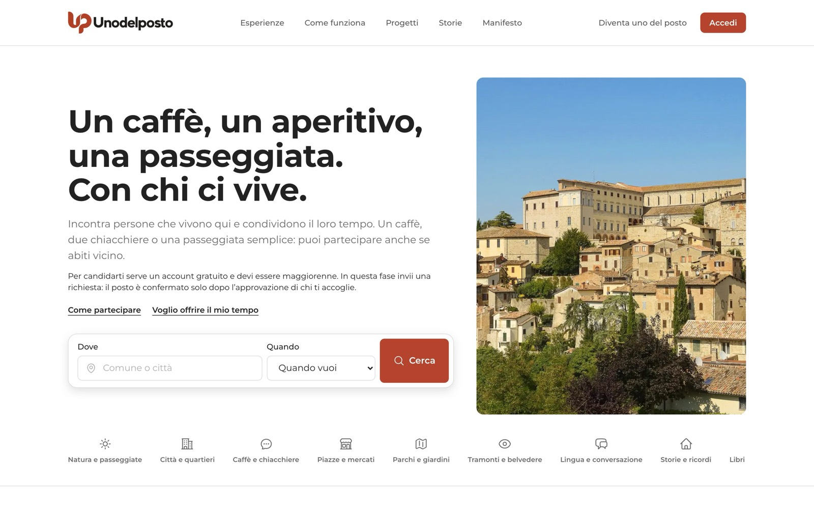
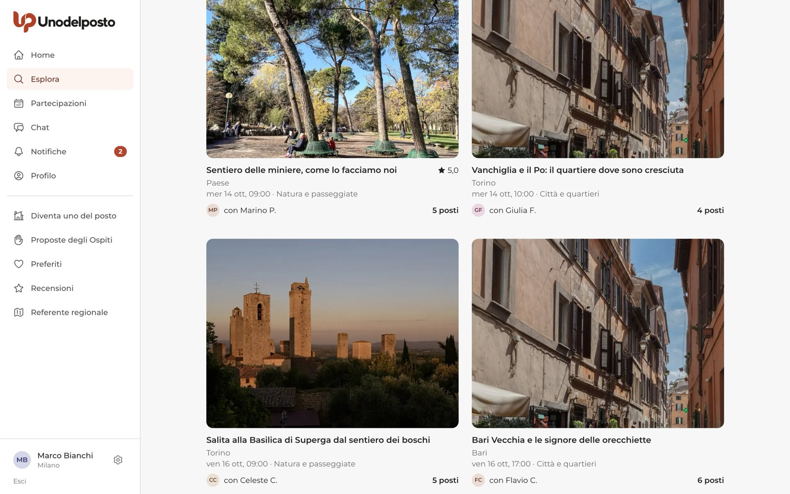
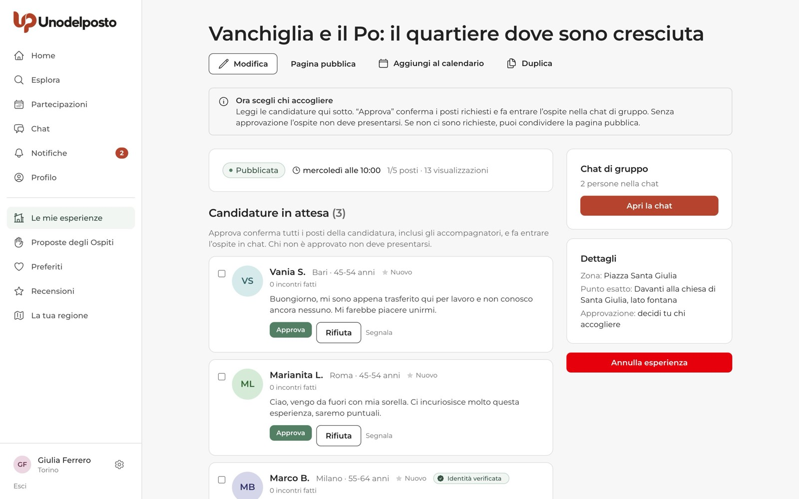
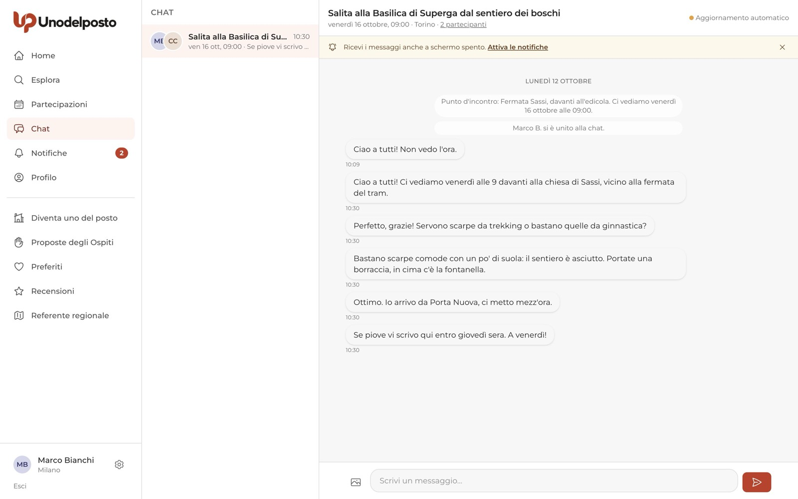
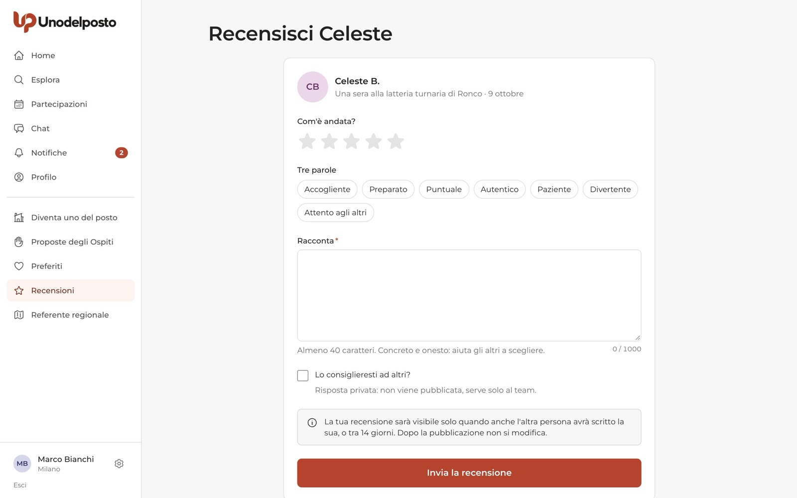
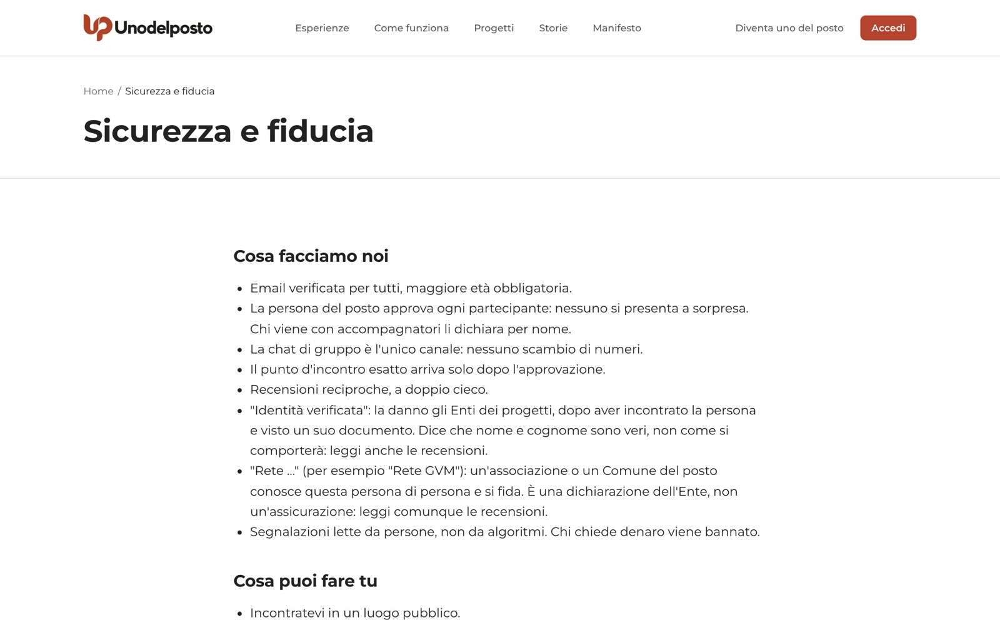
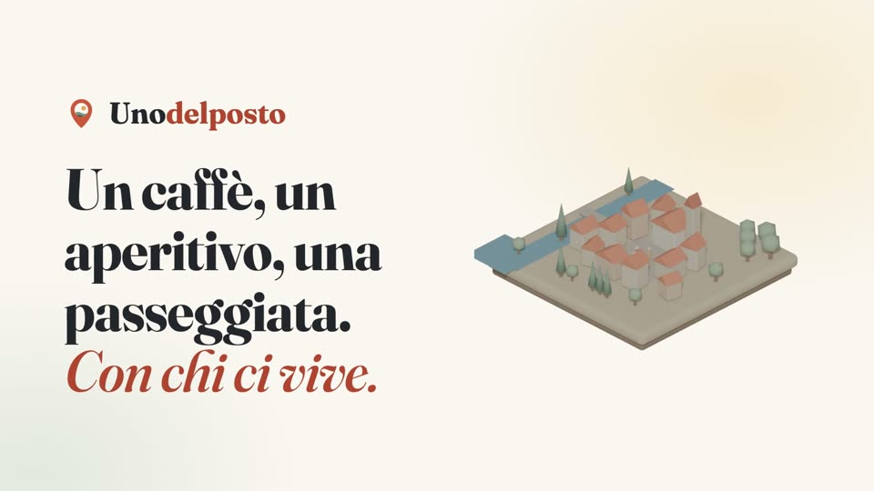

Guide · Unodelposto
Come funziona Unodelposto, passo per passo.
Una guida per ogni funzione, per chi partecipa, per chi accoglie, per le associazioni e i Comuni. Da leggere qui oppure da scaricare in PDF.

Le guide

01Primi passi
Come iscriversi, accedere con un codice via email, completare il profilo, ricevere le notifiche, installare l'app e regolare le impostazioni.

02Trovare un'esperienza e partecipare
Come cercare un'esperienza, leggere la scheda, candidarti, seguire la candidatura in Partecipazioni e arrivare preparato all'incontro.

03Proporre un'esperienza
Come si diventa uno del posto, come si crea un'esperienza in sei passi, cosa controlla lo staff e come si gestiscono candidature, chat e incontro.

04Chat di gruppo
Quando nasce la chat di gruppo, chi c'è dentro, dove trovi il punto d'incontro esatto, come uscire, segnalare un messaggio e gestire cambi e annullamenti.

05Recensioni
Come si scrivono e si leggono le recensioni dopo un incontro: tempi, pubblicazione, risposta, profilo pubblico, segnalazioni e assenze.
 06
06Proposte degli Ospiti
Come un Ospite scrive una Proposta, come viene controllata, come si candidano le persone del posto del comune e come si arriva all'incontro.

07Sicurezza e fiducia
Le protezioni di Unodelposto, i consigli prima e durante l'incontro, come segnalare e bloccare, cosa vedono gli altri del tuo profilo e cosa succede dopo una segnalazione.
 08
08Enti e Progetti
Come un Ente apre un Progetto a tempo, come le persone del posto propongono esperienze per il Progetto e come i partecipanti entrano con il codice.
 09
09Rete, verifiche e profili affidati
La Rete dell'Ente, le verifiche d'identità e i profili affidati: cosa fa l'Ente, come chiede di entrare la persona del posto e come si fa verificare un Ospite.
 10
10Referenti regionali
Cosa fanno referenti e collaboratori regionali, come ci si candida e come si usa l'area della regione: inviti, persone coinvolte, Proposte degli Ospiti e testi dei luoghi.
Preferisci guardare?
In 3 minuti, cos'è Unodelposto e come funziona. Poi, sul canale YouTube, una video guida breve per ogni azione: una cosa alla volta, sulle schermate vere del sito.
Tutti i video
Gratis, sempre
Non paga nessuno: né le persone del posto, né gli Ospiti, né le associazioni e i Comuni.
Incontri veri
Un caffè, due chiacchiere, una passeggiata. In luoghi pubblici, con chi ci vive.
Hai un dubbio?
Scrivi nella community su GitHub o a info@unodelposto.it.